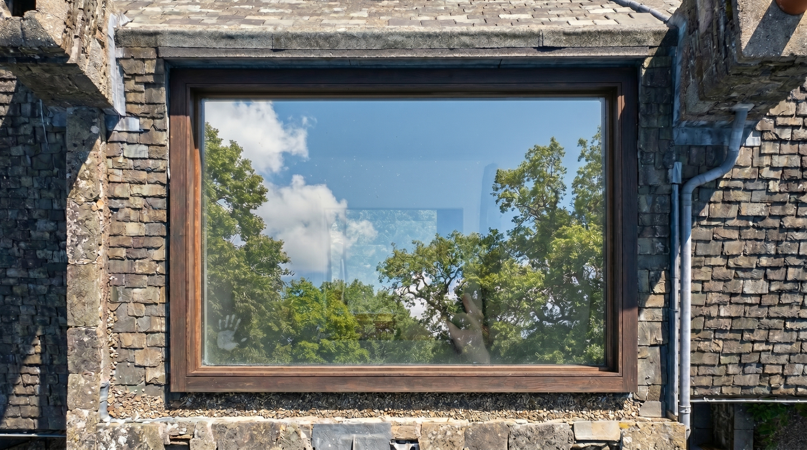
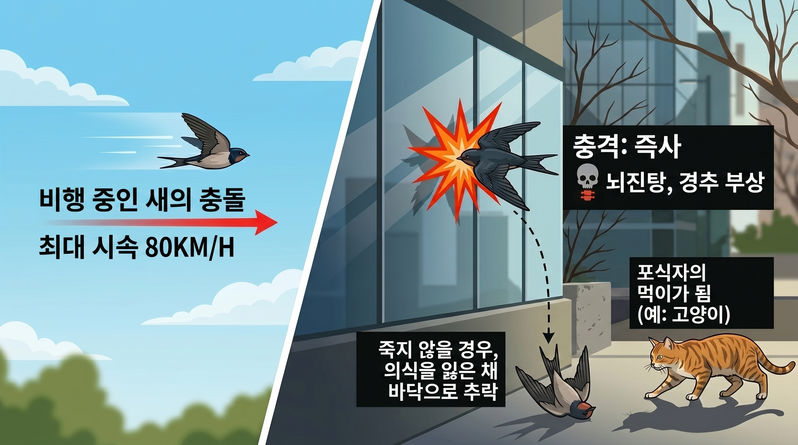

Why Birds Crash
새의 눈에는 유리가 보이지 않는 이유
새의 시각은 인간보다 넓고 예민하지만, 반사광과 투과광을 구분하는 능력이 없습니다. 유리창은 새에게 주변 배경과 다름없는 통과 가능한 공간으로, 장애물로 인식되지 않습니다.
🐦 새의 시점
어, 뚫려있네?
- 반사된 하늘·나무를 실제 풍경으로 인식
- 유리 뒤가 비치면 통과 가능한 공간으로 판단
- 반사광과 투과광 구분 능력 없음
- 유리 표면 인식 불가
👤 인간의 시점
아, 유리구나!
- 유리를 고체 장애물로 명확히 인식
- 반사와 실제 풍경을 쉽게 구분
- 투명해도 표면이 있다는 사실 인지
- 새의 충돌 위험 자체를 예측 못 함


충돌의 위험성: 최대 80km/h의 속도로 충돌하여, 대부분의 경우에 뇌진탕과 경추 손상으로 즉사한다. 즉사가 아니여도 기절한 채 바닥에 떨어지면 고양이 등 포식자의 먹이가 된다.

계절별 충돌 빈도
| 계절 | 위험도 | 주요 원인 | 주요 피해종 |
|---|---|---|---|
| 봄 (4~5월) | ★★★★★ | 이동철 + 번식기 활동 증가 | 제비, 박새, 딱새 |
| 여름 (6~8월) | ★★☆☆☆ | 어린 새 독립 비행 미숙 | 어린 박새, 참새 |
| 가을 (9~10월) | ★★★★☆ | 남하 이동철 | 직박구리, 멧새 |
| 겨울 (11~3월) | ★★☆☆☆ | 먹이 찾기 저공 비행 | 황조롱이, 직박구리 |